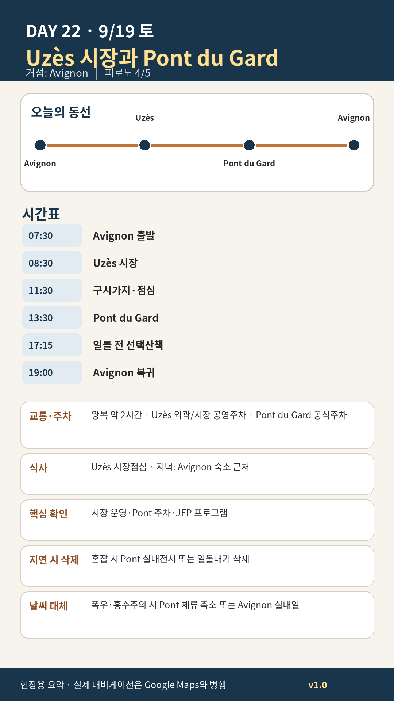

Day 22 · 9/19 토 · Avignon Phase 4 최종

카드의 지도영역은 일정 순서를 보여주는 개요이며 내비게이션이 아닙니다. 실제 도보·운전 경로는 Google Maps에서 다시 계산하세요.
시간표
이 날은 원고에 시각표가 없다. 구간 일정은 일정 한눈에 에 있다.
이 날의 메모
Uzès 토요시장과 Pont du Gard — 생활도시와 로마공학
Uzès를 추천하는 이유
Uzès는 프로방스의 유명 관광마을과 달리 가르 지방의 실제 생활도시다. Place aux Herbes의 시장, 아케이드, 공작궁 외관, 좁은 석회암 거리와 카페가 결합되어 있어 Jason·Julia가 선호하는 “새로운 도시의 성격”을 충분히 느낄 수 있다.
Uzès에서 꼭 해볼 것
- Place aux Herbes를 한 바퀴 돌기 전에 카페 테이블에서 시장 전체를 먼저 관찰하기
- 올리브·염소치즈·빵·과일 중 실제 먹을 수 있는 양만 사기
- 관광상품 노점보다 지역 식품·바구니·도자기·직물 노점을 비교하기
- Duché 내부는 특별한 관심이 있을 때만 선택하고 골목·광장을 우선하기
Pont du Gard 실용정보
- 사이트·주차장: 연중 08:00–24:00.
- 문화공간: 9월 공식 안내 09:00–19:00, 매주 월요일 오전 유지보수 가능.
- 조명: 2026년 5월 15일–9월 20일 매일 해질녘 조명 예정.
- 권장 체류: 경관만 1시간 30분, 전시·산책 포함 2시간 30분.
- 핵심: 박물관보다 강변에서 3층 아치의 비례와 수로 높이를 직접 보는 것이 우선.
선택모듈
- A 경관형: 다리 양측 시점+강변만, 1시간 30분
- B 이해형: 박물관·수로 설명 추가, 2시간 30분
- C 저녁형: 조명까지 대기하되 Avignon 귀환 20:30 이후 허용
- 우천형: Uzès 시장 축소+Pont 실내공간 후 조기귀환
오늘 확인할 것
- 핵심 실행
- Uzès 시장·Pont du Gard
- 권장 출발
- 07:30 출발
- 완충
- 시장주차·Pont 이동 45분
- 최고 리스크
- 토요혼잡·폭우/홍수
- 우선 삭제
- 박물관 또는 일몰
- 대체안
- Uzès 단축·Pont 축소
- 식사·휴식
- Uzès 점심
- 잠금 필요
- 주차·Pont
이 날의 장소
일자별 시간표와 본문 표기에서 찾은 것이다. 하루의 전부가 아니라 장소 카드가 있는 것만 담는다.